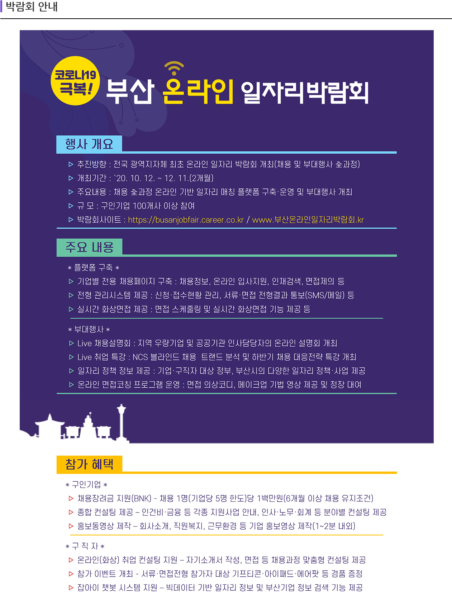

<%
option Explicit

'------ 페이지 기본정보 셋팅.
g_MenuID = "010001"  '앞 두 숫자는 lnb 페이지명, 맨 뒤 숫자는 메뉴 이미지 파일명에 참조
g_MenuID_Navi = "2,1"  '내비게이션 값
%>
<!--#include virtual = "/common/common.asp"-->
<!--#include virtual = "/include/header/header.asp"-->

<!--#include virtual = "/wwwconf/function/db/DBConnection.asp"-->
<%

%>

</head>

<body>
<!-- 상단 -->
<!--#include virtual = "/include/gnb/topMenu.asp"-->


<!-- 본문 -->
<!-- 본문 -->
<div id="contents">
	<div class="sub_visual info">
		<div class="visual_area">
			<h2 style="margin:-20px 0 0 -92px"></h2>
		</div>
	</div>
	<div class="content">
		<div class="con_box">
			<div class="info_area">
				
			</div><!-- //info_area -->
		</div>
	</div><!-- .content -->

</div>
<!-- //본문 -->
<!-- //본문 -->

<!-- 하단 -->
<!--#include virtual = "/include/footer/footer.asp"-->
<!-- 하단 -->

</body>
</html>
